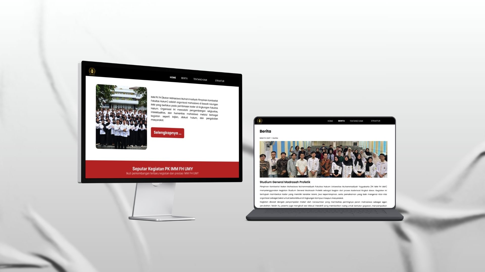
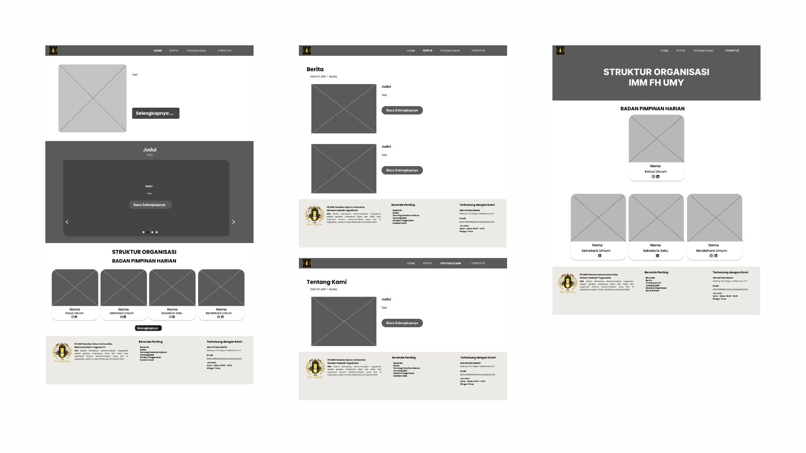
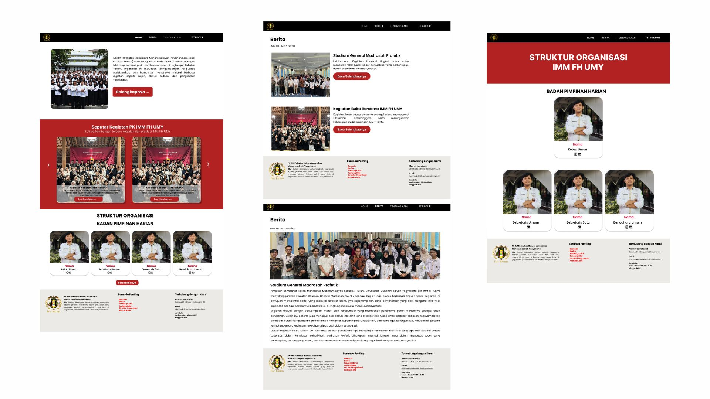

IMM FH UMY
The official website design for a student organization, built as an information hub for law students.

A clear home on the web for a student organization
This project started when IMM UMY asked me to design the look of their website, so students of the Faculty of Law would have one official place to learn about the organization.
Overview
The IMM FH UMY website delivers the organization's profile, news, management structure, and contact information to students of the Faculty of Law, Universitas Muhammadiyah Yogyakarta.
Request
The organization needed an official website that presents its information in a structured, accessible way and works as a central digital hub.
Users
Law students at Universitas Muhammadiyah Yogyakarta who want to follow organizational updates and find information about the organization.
Scope
Page and content mapping, wireframes, high-fidelity UI in Figma, a Figma prototype, and the WordPress implementation of the design.
What the website had to do
The request came directly from the organization, so the starting point was clear: students needed to find four kinds of information quickly and without confusion.
Organization profile
Who the organization is and what it stands for.
News and updates
A place to follow what the organization is doing.
Management structure
Who is in the management team.
Contact information
A clear way for students to reach the organization.
Mapping the pages before designing them
What I created wireframes for every page of the website.
Why The layout, content hierarchy, and navigation had to be clear before any visual styling.
How I mapped each page so the profile, news, management structure, and contact details would be presented clearly and be easy to scan for student visitors.

From wireframe to final design
What A clean, professional interface that matches the organization's identity.
Why The website represents the organization, so it had to look credible and still be easy to read.
How I designed the high-fidelity screens in Figma. Four design decisions shaped them:
Red, gray, and black from the logo
The colors follow the IMM logo and were also a request from the organization, so the website feels like it belongs to them.
A clean, professional look
The interface stays simple and aligned with the identity of the Faculty of Law.
Readability first
The layout prioritizes readable text so students can take in news and information without effort.
Easy navigation
Students can quickly find the profile, news, structure, and contact details from one central hub.

Checking with the client and building it
What I shared the design with IMM UMY, and then our team implemented it in WordPress.
Why The client had to confirm the design matched what they needed, and building it in WordPress showed whether the design works in a real website.
How The organization reviewed the design and found it easy to understand. Together with my team, I then built the Figma design in WordPress.
What came out of it
Result
A structured website design that gives law students one place to find the organization's profile, news, management structure, and contact information, designed in Figma and built in WordPress by our team of three.
Feedback
The organization found the design easy to understand, and the colors matched what they asked for.
Lesson learned
This project gave me hands-on experience designing an organizational website from wireframe to interface in Figma. Implementing it in WordPress taught me how designs are applied in a real website, and the importance of balancing visual design with functional requirements, so the result looks professional and still works as an information hub for students.